Myoko - Dekbedovertrek - Satijn - Zand
Vanaf € 69,95
Bedden
Liever eerst liggen?
Het uitkiezen van een bed kan al snel enkele uren duren. Plan je bezoek, dan maken we tijd voor je. De koffie staat klaar.
Ma, di, do, vr en za van 10u00 tot 18u00
Steenweg 49, 3870 Heers

Textiel

Showroom
In Heers
Steenweg 49, 3870 Heers
Via de E40, afrit Waremme. We liggen aan de N3, de verbindingsweg tussen Luik en Sint-Truiden.
Ma, di, do, vr en za van 10u00 tot 18u00
Woensdag gesloten, zondag op afspraak

Bedden
Textiel
Merken
Dekbedovertrekken van Kayori, Nomo, Hästens, Somma en 2 andere merken.
35 producten
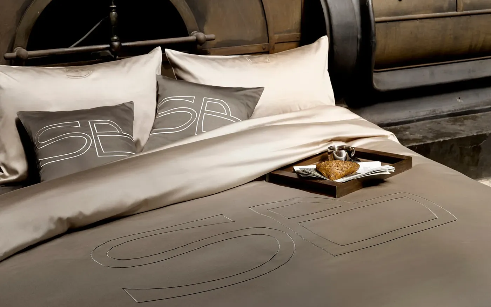
Vanaf € 69,95


Vanaf € 79,95
8 kleuren


Vanaf € 79,95
3 kleuren


Vanaf € 79,95
3 kleuren


Vanaf € 79,95
3 kleuren


€ 85 was € 119,95


Vanaf € 89,95


Vanaf € 89,95


Vanaf € 99,95
4 kleuren


Vanaf € 99,95
6 kleuren


Vanaf € 99,95


€ 105 was € 139,95


€ 115 was € 149,95
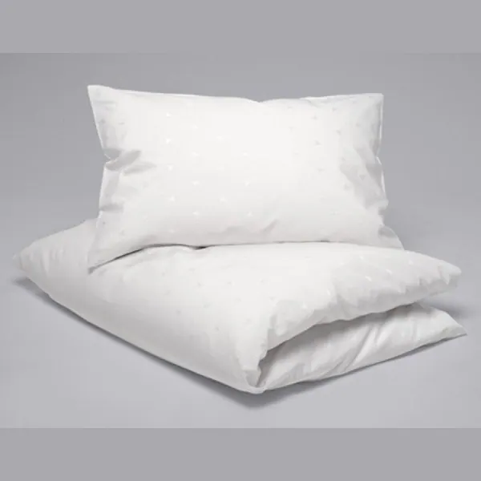
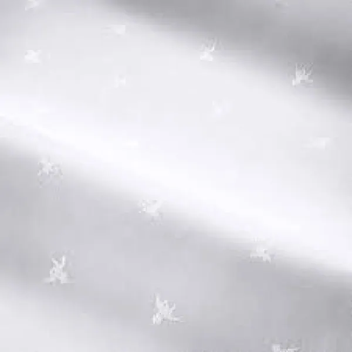
€ 120 was € 240


Vanaf € 129,95
5 kleuren


€ 135 was € 169,95
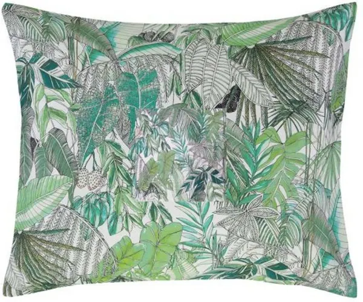
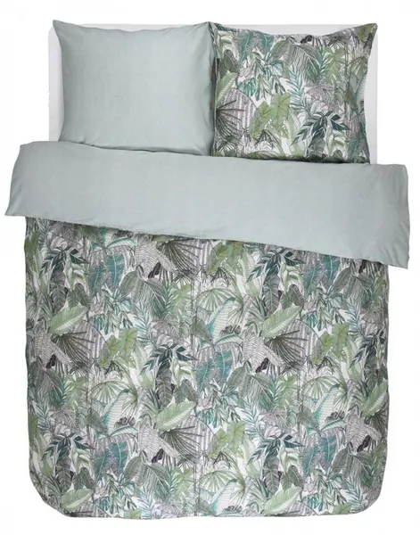
€ 143,95 was € 159,95


€ 169 was € 209,95


€ 169 was € 209,95


Vanaf € 190 was € 239,95
2 kleuren


€ 199,95
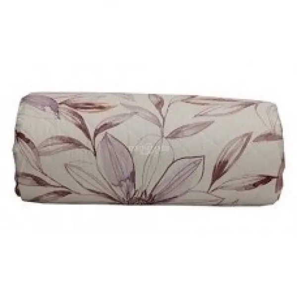
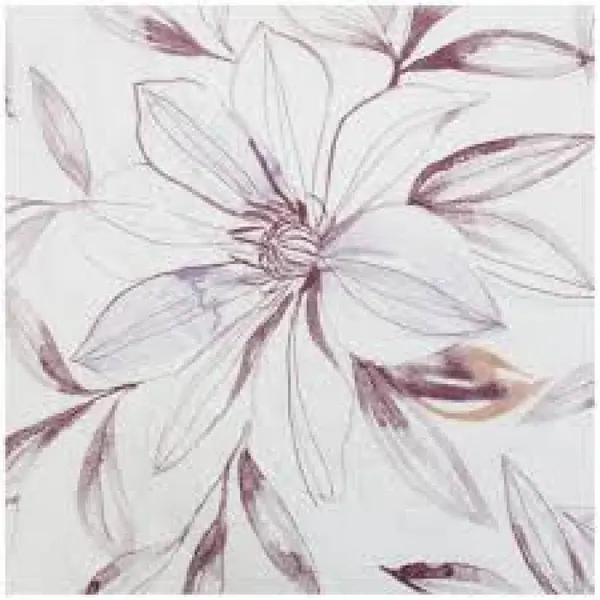
€ 206,50 was € 295
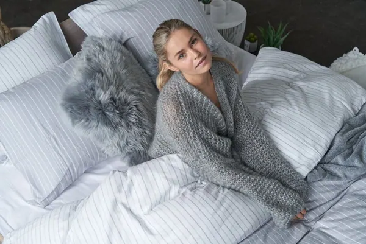
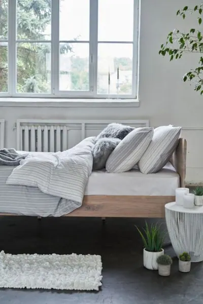
€ 239
2 kleuren
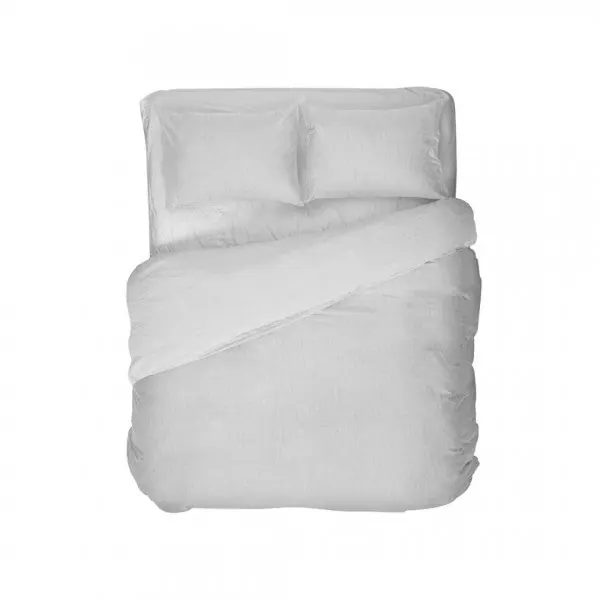
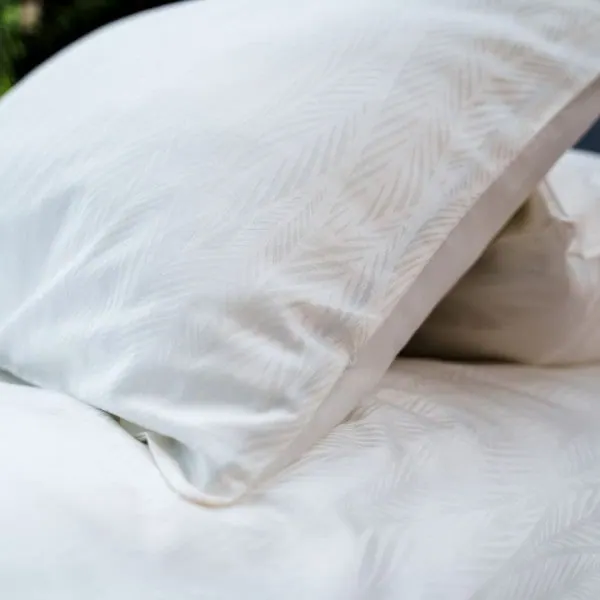
Vanaf € 239,95
2 kleuren
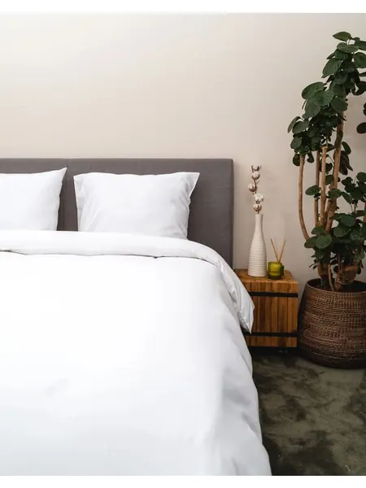
€ 255 was € 319,95


€ 269


€ 304,95


€ 325
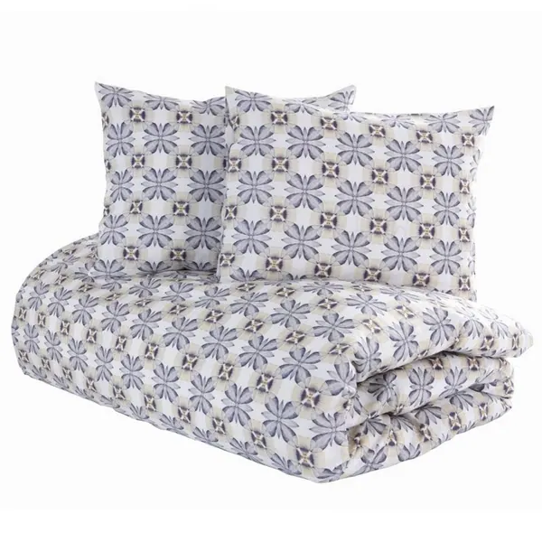
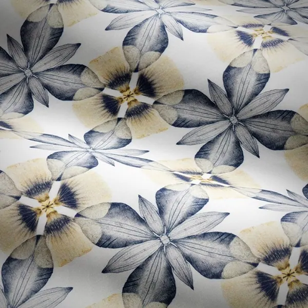
€ 360 was € 720
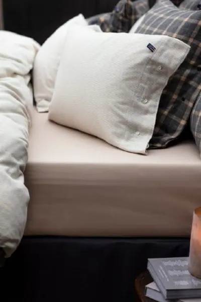
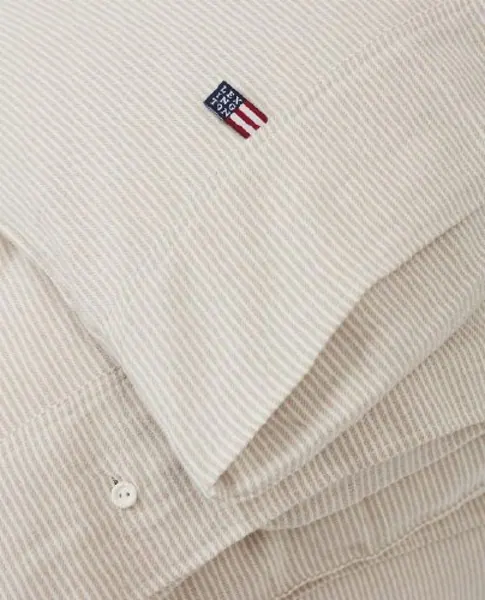
€ 379


€ 589
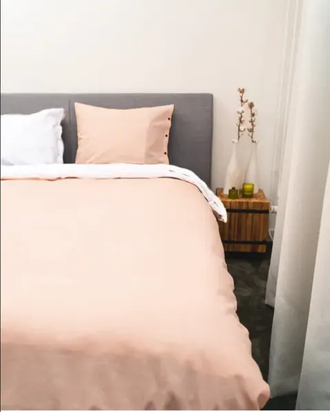
€ 119,95 was € 149,95
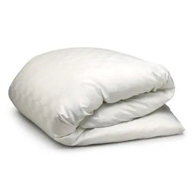
Vanaf € 175 was € 415
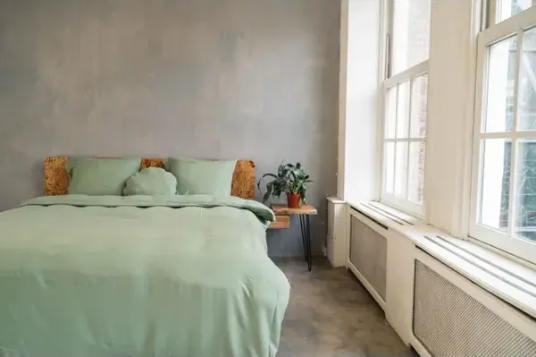
€ 200 was € 259,95
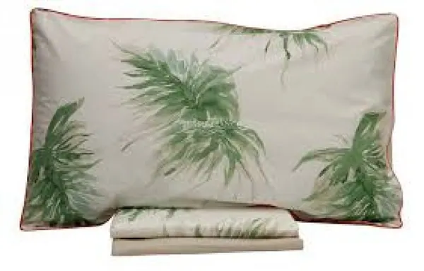
€ 206,50 was € 295
Geen producten met deze filters.
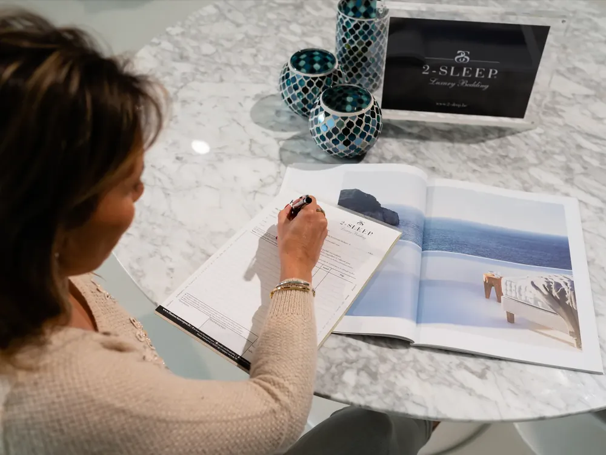
Heb je niet gevonden wat je zocht? Heb je een specifieke vraag over een product, of zelf een creatie in gedachten om te laten maken? Laat het ons weten, we zoeken het graag voor je uit.
Naast wat je in de webshop ziet, bestaan er nog tal van andere mogelijkheden om alles naar wens te maken, zoveel zelfs dat we het niet allemaal online kunnen tonen. Aarzel dus niet met vragen over je bed, boxspring, matras, kussen of bedtextiel.
De koffie staat altijd klaar bij een bezoek aan onze showroom in Heers, vlakbij Sint-Truiden, op de verbindingsweg N3 tussen Luik en Sint-Truiden.